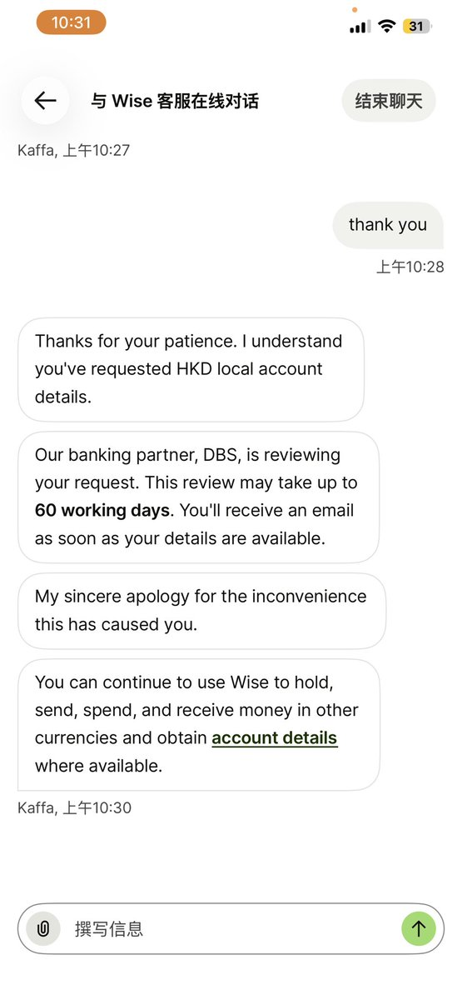
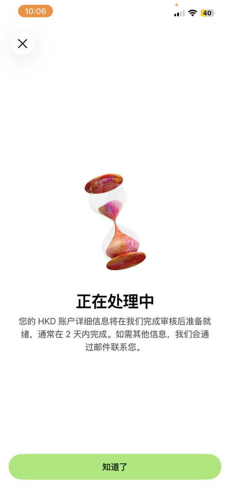
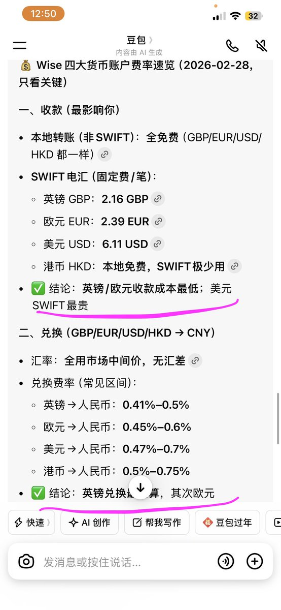

Aoi M
@aoim33
@Leslieyu0 @renweikg 有英镑账户了为什么要港币账户



硅予
@Leslieyu0
你的Wise港币账户没有通过了没？可以先试试这个教程。感谢@renweikg提供。
相信很多小伙伴跟我一样， Wise 账户申请了好多天，一直还停在审核状态。我今天跟客服询问了，至少需要 30~60 个工作日才会有结果。如果换成自然日的话，可能要将近 3 个月啦。
如果等不及的话，可以先申请英镑账户。 https://t.co/S7hdDc5Bxx https://t.co/N9aSu82yuB